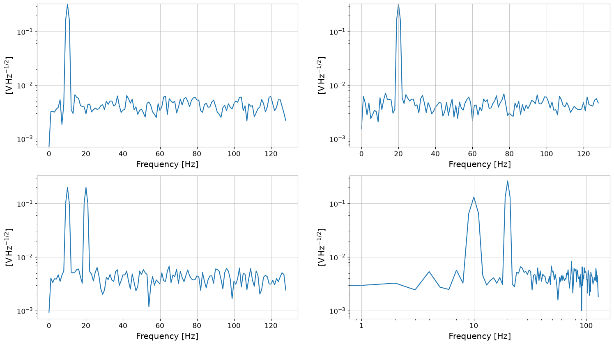
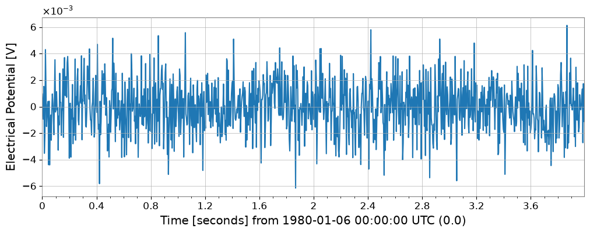
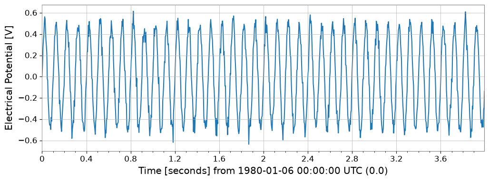

FrequencySeriesMatrix: Matrix Basics#
FrequencySeriesMatrix is a 3-dimensional array container that extends SeriesMatrix for the frequency domain (FrequencySeries) with shape: Nrow × Ncol × Nfreq.
FrequencySeries-compatible aliases such as
df / f0 / frequenciesElement access returns
FrequencySeries(fsm[i, j])Filter application (magnitude-only:
filter) and complex response application (apply_response)Conversion to time-domain
TimeSeriesMatrixviaifft()Direct use of display methods (
plot,step,repr,_repr_html_)
In this notebook, we do not define additional utility functions; instead, we directly call class methods to verify their behavior.
import warnings
import matplotlib.pyplot as plt
import numpy as np
from astropy import units as u
from gwexpy.frequencyseries import FrequencySeries, FrequencySeriesMatrix
from gwexpy.timeseries import TimeSeriesMatrix
plt.rcParams.update({"figure.figsize": (5, 3), "axes.grid": True})
Prepare Representative Data#
We calculate fft/asd from TimeSeriesMatrix to obtain FrequencySeriesMatrix.
rng = np.random.default_rng(0)
n = 1024
dt = (1 / 256) * u.s
t0 = 0 * u.s
t = (np.arange(n) * dt).to_value(u.s)
tone10 = np.sin(2 * np.pi * 10 * t)
tone20 = np.sin(2 * np.pi * 20 * t + 0.3)
data = np.empty((2, 2, n), dtype=float)
data[0, 0] = 0.5 * tone10 + 0.05 * rng.normal(size=n)
data[0, 1] = 0.5 * tone20 + 0.05 * rng.normal(size=n)
data[1, 0] = 0.3 * tone10 + 0.3 * tone20 + 0.05 * rng.normal(size=n)
data[1, 1] = 0.2 * tone10 - 0.4 * tone20 + 0.05 * rng.normal(size=n)
units = np.full((2, 2), u.V)
names = [["ch00", "ch01"], ["ch10", "ch11"]]
channels = [["X:A", "X:B"], ["Y:A", "Y:B"]]
tsm = TimeSeriesMatrix(
data,
dt=dt,
t0=t0,
units=units,
names=names,
channels=channels,
rows={"r0": {"name": "row0"}, "r1": {"name": "row1"}},
cols={"c0": {"name": "col0"}, "c1": {"name": "col1"}},
name="demo",
)
fft = tsm.fft()
asd = tsm.asd(fftlength=1, overlap=0.5)
print("tsm", tsm.shape, "sample_rate", tsm.sample_rate)
print("fft", fft.shape, "df", fft.df, "f0", fft.f0)
print("asd", asd.shape, "unit", asd[0, 0].unit)
print("frequencies[:5]", asd.frequencies[:5])
display(asd)
asd.plot(subplots=True)
plt.xscale("log")
plt.yscale("log")
tsm (2, 2, 1024) sample_rate 256.0 Hz
fft (2, 2, 513) df 0.25 Hz f0 0.0 Hz
asd (2, 2, 129) unit V / Hz(1/2)
frequencies[:5] [0. 1. 2. 3. 4.] Hz
SeriesMatrix: shape=(2, 2, 129), name='demo'
- epoch: 0.0 s
- x0: 0.0 Hz, dx: 1.0 Hz, N_samples: 129
- xunit: Hz
Row Metadata
| name | channel | unit | |
|---|---|---|---|
| key | |||
| r0 | row0 | ||
| r1 | row1 |
Column Metadata
| name | channel | unit | |
|---|---|---|---|
| key | |||
| c0 | col0 | ||
| c1 | col1 |
Element Metadata
| unit | name | channel | row | col | |
|---|---|---|---|---|---|
| 0 | V / Hz(1/2) | ch00 | X:A | 0 | 0 |
| 1 | V / Hz(1/2) | ch01 | X:B | 0 | 1 |
| 2 | V / Hz(1/2) | ch10 | Y:A | 1 | 0 |
| 3 | V / Hz(1/2) | ch11 | Y:B | 1 | 1 |

Various Input Patterns (Constructor Examples)#
We verify inputs via df/f0, frequencies, 2D list of FrequencySeries, Quantity input, etc.
print("=== FrequencySeriesMatrix Constructor Examples ===")
freqs = np.linspace(0, 64, 65) * u.Hz
f = freqs.to_value(u.Hz)
peak10 = np.exp(-0.5 * ((f - 10) / 1.5) ** 2)
peak20 = np.exp(-0.5 * ((f - 20) / 2.0) ** 2)
data_f = np.empty((2, 2, len(freqs)), dtype=float)
data_f[0, 0] = peak10
data_f[0, 1] = peak20
data_f[1, 0] = 0.6 * peak10 + 0.4 * peak20
data_f[1, 1] = 0.2 * peak10 - 0.5 * peak20
units_f = np.full((2, 2), u.V / u.Hz**0.5)
names_f = [["p10", "p20"], ["mix", "diff"]]
channels_f = [["X:A", "X:B"], ["Y:A", "Y:B"]]
# Case 1: Explicitly specify frequencies
fsm = FrequencySeriesMatrix(
data_f,
frequencies=freqs,
units=units_f,
names=names_f,
channels=channels_f,
rows={"r0": {"name": "row0"}, "r1": {"name": "row1"}},
cols={"c0": {"name": "col0"}, "c1": {"name": "col1"}},
name="peaks",
)
print("case1 frequencies", fsm.shape, "df", fsm.df, "f0", fsm.f0)
# Case 2: Specify df/f0 (axis generated via Index.define)
fsm_df = FrequencySeriesMatrix(
data_f, df=1 * u.Hz, f0=0 * u.Hz, units=units_f, names=names_f
)
print("case2 df/f0", fsm_df.shape, "df", fsm_df.df)
# Case 3: Construct from 2D list of FrequencySeries
fs00 = FrequencySeries(
data_f[0, 0], frequencies=freqs, unit=units_f[0, 0], name="p10", channel="X:A"
)
fs01 = FrequencySeries(
data_f[0, 1], frequencies=freqs, unit=units_f[0, 1], name="p20", channel="X:B"
)
fs10 = FrequencySeries(
data_f[1, 0], frequencies=freqs, unit=units_f[1, 0], name="mix", channel="Y:A"
)
fs11 = FrequencySeries(
data_f[1, 1], frequencies=freqs, unit=units_f[1, 1], name="diff", channel="Y:B"
)
fsm_from_fs = FrequencySeriesMatrix([[fs00, fs01], [fs10, fs11]])
print(
"case3 from FrequencySeries",
fsm_from_fs.shape,
"cell type",
type(fsm_from_fs[0, 0]),
)
# Case 4: Quantity input (units set automatically)
fsm_q = FrequencySeriesMatrix(data_f * (u.mV / u.Hz**0.5), frequencies=freqs)
print("case4 Quantity meta unit", fsm_q.meta[0, 0].unit)
# Case 5: Irregular frequencies
irreg = np.array([0, 1, 2, 4, 8]) * u.Hz
fsm_irreg = FrequencySeriesMatrix(
np.ones((1, 1, len(irreg))), frequencies=irreg, units=[[u.V]], names=[["irreg"]]
)
print("case5 irregular frequencies", fsm_irreg.frequencies)
=== FrequencySeriesMatrix Constructor Examples ===
case1 frequencies (2, 2, 65) df 1.0 Hz f0 0.0 Hz
case2 df/f0 (2, 2, 65) df 1.0 Hz
case3 from FrequencySeries (2, 2, 65) cell type <class 'gwexpy.frequencyseries.frequencyseries.FrequencySeries'>
case4 Quantity meta unit mV / Hz(1/2)
case5 irregular frequencies [0. 1. 2. 4. 8.] Hz
Indexing and Slicing#
fsm[i, j]returns aFrequencySeriesSlicing returns a
FrequencySeriesMatrixAccess is also possible using row/col labels
s00 = asd[0, 0]
print("[0,0]", "type", type(s00), "df", s00.df, "f0", s00.f0, "unit", s00.unit)
print("[0,0]", "name", s00.name, "channel", s00.channel)
s00.plot()
s01 = asd["r0", "c1"]
print("[r0,c1]", "name", s01.name, "channel", s01.channel)
sub = asd[:, 0]
print("asd[:,0] ->", type(sub), sub.shape)
sub.plot(subplots=True)
plt.xscale("log")
plt.yscale("log")
[0,0] type <class 'gwexpy.frequencyseries.frequencyseries.FrequencySeries'> df 1.0 Hz f0 0.0 Hz unit V / Hz(1/2)
[0,0] name ch00 channel X:A
[r0,c1] name ch01 channel X:B
asd[:,0] -> <class 'gwexpy.frequencyseries.matrix.FrequencySeriesMatrix'> (2, 1, 129)


Sample Axis Editing (frequency axis)#
diff/padreturn aFrequencySeriesMatrix
band = asd.crop(start=5 * u.Hz, end=40 * u.Hz)
print("band", type(band), band.shape, "span", band.xspan)
band.plot(subplots=True)
plt.xscale("log")
plt.yscale("log")
diffed = band.diff(n=1)
print("diffed", type(diffed), diffed.shape, "df", diffed.df)
padded = band.pad(5)
print("padded", type(padded), padded.shape, "f0", padded.f0)
band <class 'gwexpy.frequencyseries.matrix.FrequencySeriesMatrix'> (2, 2, 35) span (<Quantity 5. Hz>, <Quantity 40. Hz>)
diffed <class 'gwexpy.frequencyseries.matrix.FrequencySeriesMatrix'> (2, 2, 34) df 1.0 Hz
padded <class 'gwexpy.frequencyseries.matrix.FrequencySeriesMatrix'> (2, 2, 45) f0 0.0 Hz

Operations (operators / apply_response)#
Arithmetic operators such as scalar multiplication preserve per-element units, from either side (
2 * fsmandfsm * 2behave identically)NumPy ufuncs are not applied directly to a matrix:
np.sqrt(fsm)raisesTypeError. Usenp.sqrt(fsm.value)when a raw NumPy result is wantedapply_responseis an extended method to apply complex/real frequency responses (dimensionless)
scaled = 2 * band
print("scaled unit", scaled[0, 0].unit)
# Simple real response suppressing around 30 Hz
resp_mag = 1 / (1 + (band.frequencies / (30 * u.Hz)) ** 4)
shaped = band.apply_response(resp_mag)
print(
"apply_response",
shaped.shape,
"dtype",
shaped.value.dtype,
"unit",
shaped[0, 0].unit,
)
shaped.plot(subplots=True)
plt.xscale("log")
plt.yscale("log")
scaled unit V / Hz(1/2)
apply_response (2, 2, 35) dtype float64 unit V / Hz(1/2)

filter (magnitude-only)#
filter delegates to GWpy’s fdfilter, applying the filter’s “magnitude response” only (not the phase).
As an example, we apply an IIR filter created with scipy.signal.butter to the fft and then convert back to the time domain with ifft().
from scipy import signal
sr = tsm.sample_rate.to_value(u.Hz)
b, a = signal.butter(4, [5, 40], btype="bandpass", fs=sr)
fft_filt = fft.filter(b, a, analog=False)
tsm_filt = fft_filt.ifft()
print("fft_filt", fft_filt.shape, "df", fft_filt.df)
print("tsm_filt", tsm_filt.shape, "dt", tsm_filt.dt)
tsm_filt[0, 0].plot(xscale="seconds");
fft_filt (2, 2, 513) df 0.25 Hz
tsm_filt (2, 2, 1024) dt 0.00390625 s

ifft (FFT to Time Domain)#
Applying ifft() to the output of TimeSeriesMatrix.fft() reproduces the original TimeSeriesMatrix (within numerical precision).
tsm_back = fft.ifft()
rms = np.sqrt(np.mean((tsm_back[0, 0].value - tsm[0, 0].value) ** 2))
print("ifft back", tsm_back.shape, "dt", tsm_back.dt, "t0", tsm_back.t0)
print("rms error (cell 0,0)", rms)
tsm[0, 0].plot(xscale="seconds")
tsm_back[0, 0].plot(xscale="seconds");
ifft back (2, 2, 1024) dt 0.00390625 s t0 0.0 s
rms error (cell 0,0) 8.131556499372449e-17

Display Methods: repr / plot / step#
repr: Text representation_repr_html_: In notebooks,display(fsm)shows tabular formatplot/step: Class methods for direct plotting (not saved)
print("repr:\n", band)
display(band)
band.plot(subplots=True)
plt.xscale("log")
plt.yscale("log")
band.step(where="mid")
plt.xscale("log")
plt.yscale("log")
repr:
SeriesMatrix(shape=(2, 2, 35), name='demo')
epoch : 0.0 s
x0 : 5.0 Hz
dx : 1.0 Hz
xunit : Hz
samples : 35
[ Row metadata ]
name channel unit
key
r0 row0
r1 row1
[ Column metadata ]
name channel unit
key
c0 col0
c1 col1
[ Elements metadata ]
unit name channel row col
0 V / Hz(1/2) ch00 X:A 0 0
1 V / Hz(1/2) ch01 X:B 0 1
2 V / Hz(1/2) ch10 Y:A 1 0
3 V / Hz(1/2) ch11 Y:B 1 1
SeriesMatrix: shape=(2, 2, 35), name='demo'
- epoch: 0.0 s
- x0: 5.0 Hz, dx: 1.0 Hz, N_samples: 35
- xunit: Hz
Row Metadata
| name | channel | unit | |
|---|---|---|---|
| key | |||
| r0 | row0 | ||
| r1 | row1 |
Column Metadata
| name | channel | unit | |
|---|---|---|---|
| key | |||
| c0 | col0 | ||
| c1 | col1 |
Element Metadata
| unit | name | channel | row | col | |
|---|---|---|---|---|---|
| 0 | V / Hz(1/2) | ch00 | X:A | 0 | 0 |
| 1 | V / Hz(1/2) | ch01 | X:B | 0 | 1 |
| 2 | V / Hz(1/2) | ch10 | Y:A | 1 | 0 |
| 3 | V / Hz(1/2) | ch11 | Y:B | 1 | 1 |

Summary#
FrequencySeriesMatrixallows batch processing as a matrix while preserving the frequency axis (df/f0/frequencies) and element metadata.filterapplies magnitude-only filtering, whileapply_responsecan apply arbitrary frequency responses including complex responses.Using
ifft(), you can convert back to the time-domainTimeSeriesMatrix, enabling workflows where processing is done in the frequency domain and then verified as waveforms.